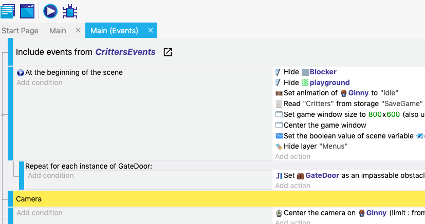

Pokemon Rescue

Building a video game that allows my daughter to do what she wants with Pokemon characters: Care for them.
The Idea
The idea is pretty simple for this video game: You run an animal rescue where you must care for the animals you accept and try to get them adopted.
The difference here is that it uses Pokemon as the animals.
Like many other projects, I'm not intending to make any money on this at all. Or even release it to the wild. The goal will be to have a game that my daughter would enjoy playing and I learn a few things around game development.
Requirements
- Simple to build, I don't want to spend half a day getting the code formatting worked out. I do that every day at work, I don't want that in my free time.
- Dedicated hardware or at least can be dedicated (like an iPad since she knows how to use that)
- A top down RPG-like game where you are able to pet, feed and carry the animals around to put them into pens or outside to play
- The animals slowly degrade in health and happiness, petting, feeding and letting out to play will help
- Depending on the health and happiness of the animals they have a chance to be adopted
Learning Path
There are a TON of options for building a video game. I remember making a game in Q-Basic back when I was learning to code (middle school) and had a great time. I'd like to recapture that fun but I don't have much time to spend working out the baseline framework.
PhaserJS. I've been looking at using and learning PhaserJS for a few years but it may be too low-level for the time commitment I have for this project. It will remain on my radar for future games but the options of other platforms have exploded and the exportable targets for this platform are almost too limited.
MakeCode Arcade. My son and I are loving this environment because it's easy to use and gets you started quickly. It has dedicated hardware options which was a nice touch. However it's more geared for learning how to code and not producing "real" games.
GDevelop. This platform looks promising. I spent a couple weeks looking and playing around with this environment. The whole drag/drop thing was hard for me to get over as a developer but you still need to know the "overall mindset" of a developer to get anything useful done. I produced a pretty solid proof of concept with this environment in a short amount of time.
GB Studio. This may be my end goal. The idea that the dedicated hardware is a GameBoy is a fantastic fit! The game size is limited, graphics are simple and the tool looks easy to use and build. This will likely be where I port the game to after I get something built with GDevelop.
The Results
This game is far from complete and my goal is to have it done by the end of December 2021. It's been nice using GDevelop to be able to sit down for a few minutes and accomplish a feature.

Using standard repository features I was able to make sure this application was saved and had history in case things get knotted up.
As I was building it I discovered GBStudio and had a few regrets that I didn't start there. But that's the purpose of a proof of concept, learn the environment and get a sense of the viability of this project.

My plan is to use GDevelop to create the game that satisfies the requirements I have above. My daughter should be able to play it on the iPad for now. Then I want to move it over to GB Studio and put it on a GameBoy using a re-programmable cartridge.
Stay tuned! I'll be updating this or adding new posts as this project moves forward!